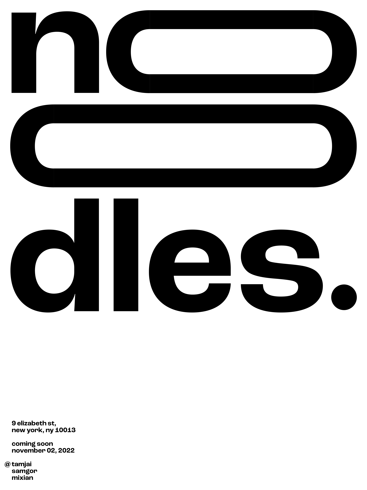
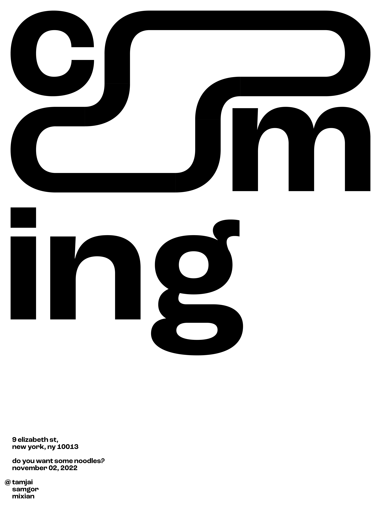
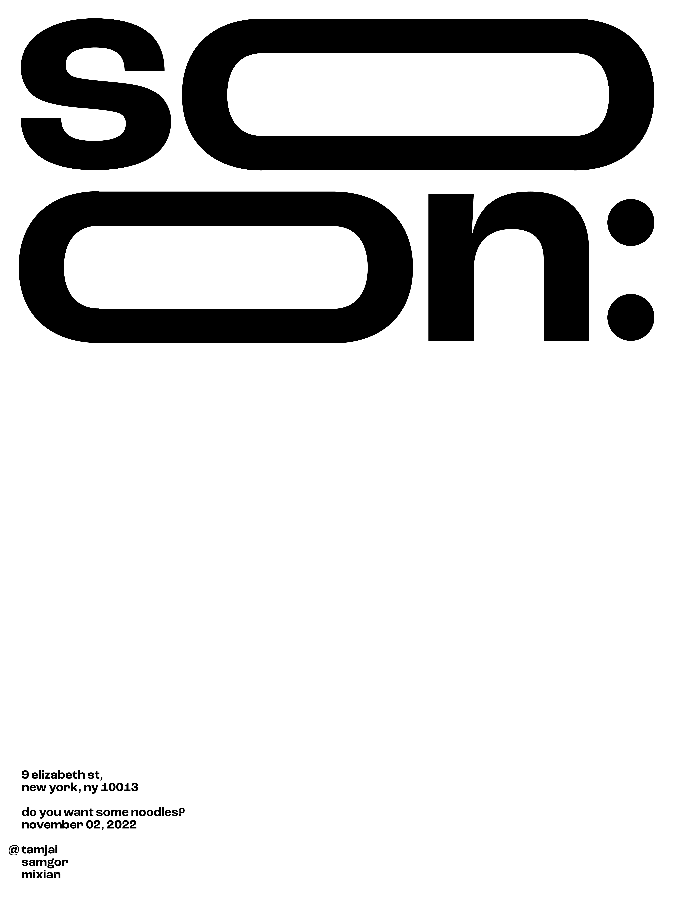
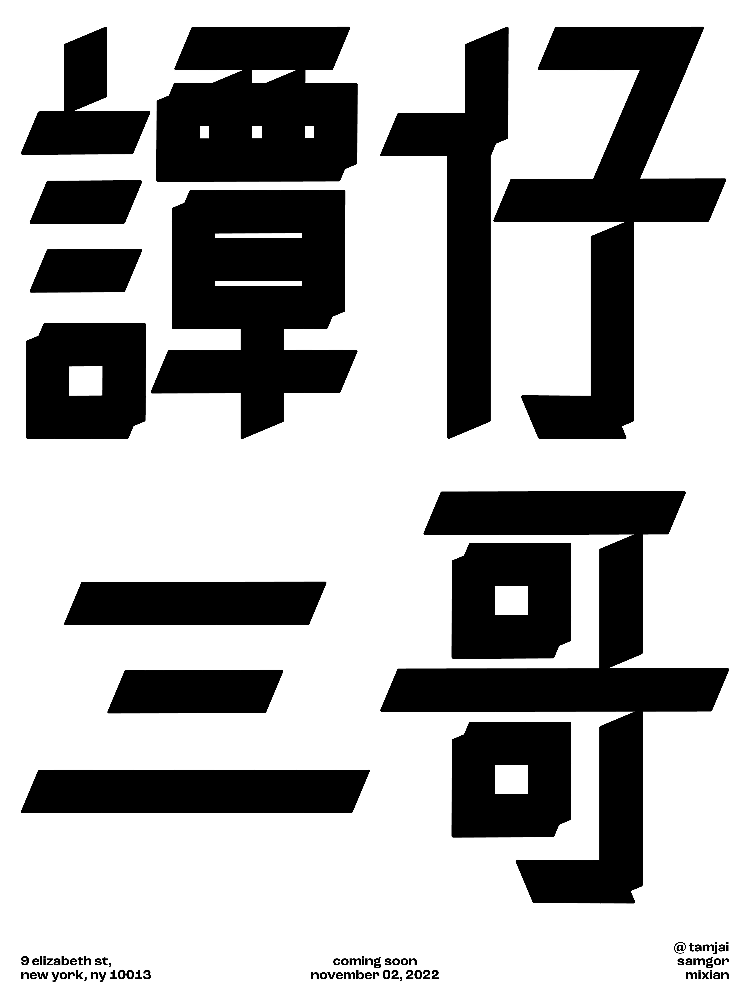

Typographic Poster (Nov 2022)
for CORE 1: TYPOGRAPHY with Scott Vander Zee (FALL 2022): PROJECT #4

Brief:
Design a typographic poster for an event or purpose of your choosing.
I chose to create a poster to promote a noodle shop. The restaurant I have chosen to base it on is TamJai SamGor MiXian, a fast casual restaurant chain in Hong Kong with operations in Singapore and Japan. They currently do not have a store open in New York City so this was created as a pretend promotional poster/material for them.
I was able to experiment with creating my own Chinese character for this poster. It was important for me to include Chinese typography while desgining this as it shows the Chinese culture as well as the culture behind the restaurant.



posters printed and posted: (below)

poster project inspiration:
poster project process: